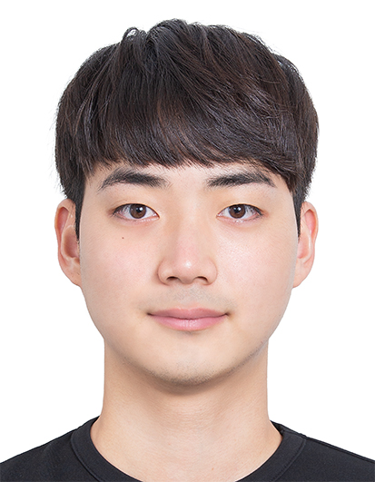

 |
M.S. Student School of Computing, KAIST sanghyun.park@kaist.ac.kr / sanghyun.park.cnu@gmail.com KAIST N5 #2310 [CV] [Google Scholar] [Github] [LinkedIn] |
| [1] |
Feasibility of Measuring Shot Group Using LoRa Technology and YOLO V5 Sanghyun Park, Dongheon Lee, Jisoo Choi, Dohyeon Ko, Minji Lee, Zack Murphy, Nowf Binhowidy, Anthony Smith. IEEE Sensors Applications Symposium (SAS), 2022 [PDF] |